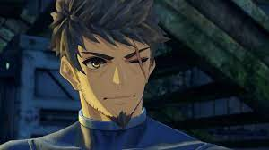

Joven originario de la Ciudad, lucha contra Moebius usando sus puños con poder especial. Es honesto y de personalidad honesta y servicial.
Lucha con la clase "Artista Marcial" y su arma preferida es el Nudillo de Ouroboros.
Sus nudillos se los dio su abuelo, Ghondor. Tiene función especial de Piedra Ouroboros.
Empuña una fina espada roja y viaja junto a Matthew. Es calmada y calculadora en sus decisiones.
Su clase es "Espadachín Monado" con Monado, aunque cura, lucha también de forma ofensiva.
La realidad es que es la conciencia perdida de Alvis, que ahora trata de detener a su cuerpo..

Una soldado agnesa que lucha con bastón, de personalidad con mente fuerte y a veces un poco dura.
Su clase es Músico Resplandeciente, empuña el bastón Llama Celestial Brillante.
Es la hija de Rex, que vuelve a reencontrarse con cu padre tras perderse durante el inicio de la historia.
Soldado Kevesi experto en ingeniería mecánica, tranquilo y tímido por naturaleza.
Su clase es Maquinista y porta la Mochila Variable. Es defensor y puede activar numerosos efectos al bloquear.
En lugar de usar un blade, lucha con un par de brazos mecánicos fabricados por él mismo. Es el hijo de Shulk
Amable espadachín que empuña una gran espada roja. Debido a batallas anteriores, su brazo derecho es protésico.
Su clase es "Gran Mariscal", posee un rol defenfivo, aunque también puede ejecutar poderosos ataques en cadena.
Se trata del protagonista del primer juego de la saga, que ahora aparece en una versión más adulta.

Poderoso espadachín que blande dos grandes espadas. Es flexible y franco, junto a Shulk lidera a los Libertadores.
Su clase es "Piloto Maestro", un poderoso atacante que lucha en primera linea..
Se trata del protagonista del segundo juego de la saga, que ahora vuelve pasado mucho tiempo con un proposito desconocido.